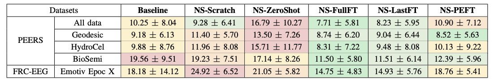
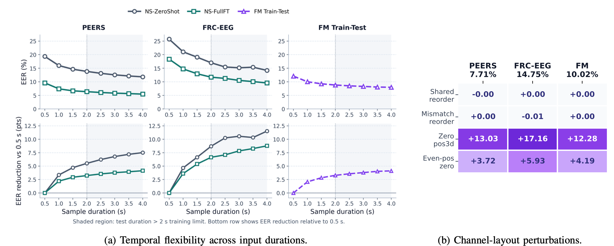

Abstract
A central challenge in EEG authentication is that models are typically tied to the acquisition settings in which they are trained. In particular, variations in headset hardware, channel layout, and signal duration create heterogeneous recordings that existing models are not designed to handle, causing each new headset or dataset to be treated as a separate model-development problem. This fragmentation limits multi-dataset learning, hinders knowledge transfer, and reduces model reusability. To address this limitation, we present NeuroShield, a reusable foundation model for EEG authentication that learns identity-discriminative embeddings from variable-channel and variable-length EEG recordings through a dual-stage transformer architecture. We pretrain NeuroShield on three public EEG datasets comprising 15,762 subjects and 28,116 sessions, and evaluate transfer on two unseen down-datasets. Our evaluations show that, after fine-tuning, NeuroShield reduces equal error rate by 0.44–8.06 percentage points relative to the state of the art. NeuroShield further generalizes to segments longer than those seen during training and operates across channel layouts not encountered during pretraining. These results establish NeuroShield as a reusable and adaptable EEG identity encoder across heterogeneous recording settings. We release NeuroShield as open source to support reproducibility and community adoption.
Changelog
Description of Change 1.
Longer description of Change 2.
Even longer description of Change 3. bla bla bla bla bla bla bla bla bla
Processing Pipeline
Authentication begins with an EEG segment.

The model uses transformer-based modeling to group neighbouring samples into fixed-length patches.

NeuroShield employs a patch encoder to capture relationships between patches using self-attention.

The model generates a compact temporal summary and captures long-range temporal dependencies.

The model uses a learned coordinate encoder mapping each channel position to a geometry-aware positional embedding.

NeuroShield enhances subject seperability using supervised contrastive loss.

Evaluation
The evaluation of the NeuroShield model support the view that EEG authentication can be approached as a reusable representation-learning problem rather than as a sequence of isolated dataset-specific models.

Performance of the NeuroShield model on unseen data is evaluated using heterogenous pretraining methods (reported as Equal-Error-Rate, %), where greener cells indicate lower EER within each dataset.

Input Flexibility Analysis: Temporal Flexibility and Channel-Layout Perturbations. The results (a) show that NeuroSield remains effective across variable input durations and can generalize to longer temporal windows than those seen during training. The model is not tied to a canonical channel oredring, since the performance does not drop significantly (b).

The figure shows that NeuroShield can tolerate a small number of noisy or missing channels as the EER rises gradually as the verification-time channel-removal rate increases.

The effect of pretraining data composition is evaluated showing that the model benefits from multi-session data (a). The model achieves comparable performance on both seen and previously unseen EEG channels, indicating strong channel generalization and low dependence on specific channel identities (b).

The results show that removing individual channels has only a limited impact on performance, while single-channel evaluations reveal spatial differences in discriminative biometric information across the scalp.
The results show that removing individual channels has only a limited impact on performance, while single-channel evaluations reveal spatial differences in discriminative biometric information across the scalp.
Read the full Paper
Code Example
The source code is publicly available on GitHub. Clone the repository using:
gh repo clone kit-ps/NeuroShield-FMThe simplest direct model input is a NumPy bundle containing EEG windows (shape [N, C, T], dtype float32), a channel-validity mask (with shape [N, C], dtype bool) and channel 3D positions (shape [N, C, 3], dtype float32).
Where N is the number of windows, C is the number of channel slots in this batch and T is the number of samples per window.
python examples/minimal_inference.py --input-npz sample_batch.npz
--output-npy sample_embeddings.npyThe .npz file should contain X, M and P. The script then loads the pretrained checkpoint from ckpts_bw_replicate_varlen/ and writes one embedding per input window.
mod = _import_train_module(str(args.cuda_devices))
device = _resolve_device(mod, str(args.cuda_devices))
model, embed_dim = mod.build_model(
trial=None,
num_channels=len(mod.REF_CLIST_NORM),
device=device,
fixed_params=trial_params,
)BibTeX
@article{YourPaperKey2024,
title={NeuroShield: A Device-Agnostic Foundation Model for EEG Authentication},
author={Matin Fallahi, Patricia Aria-Cabarcos, Thosten Strufe},
journal={Conference/Journal Name},
year={2026},
url={https://your-domain.com/your-project-page}
}